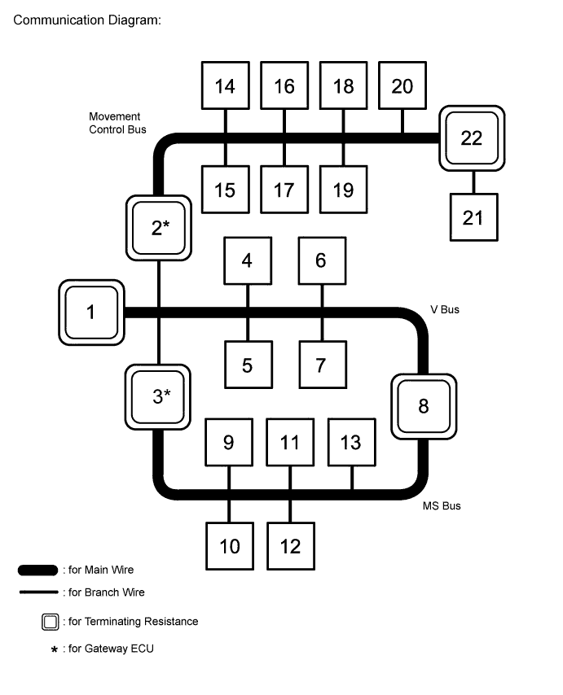
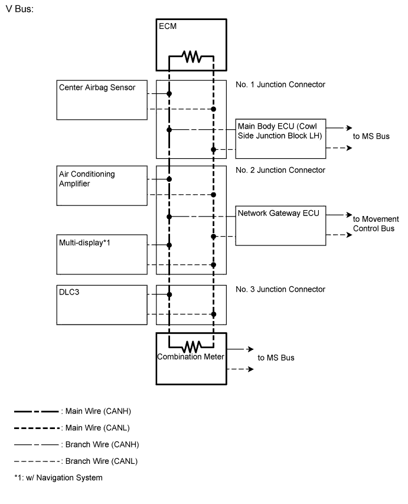
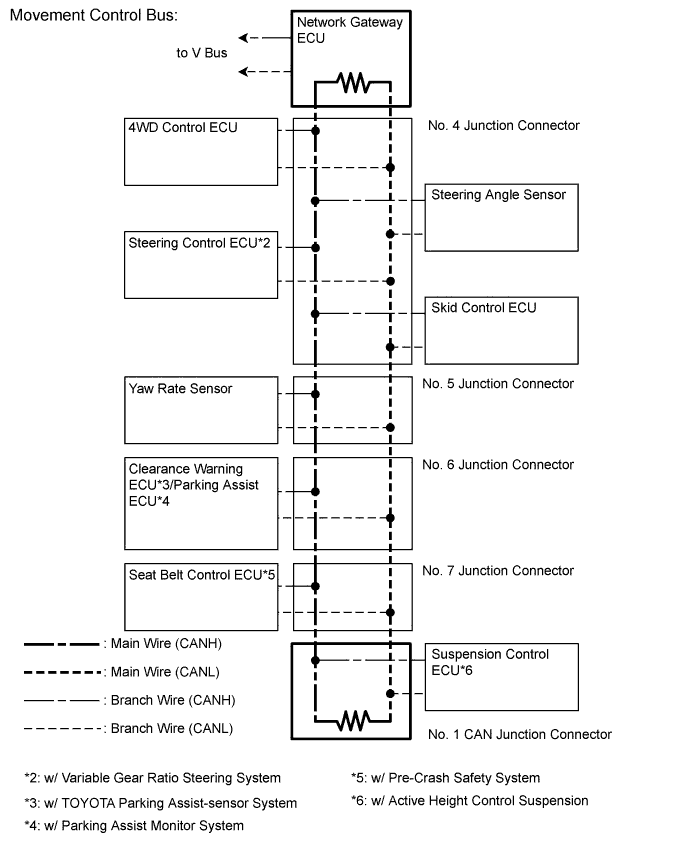
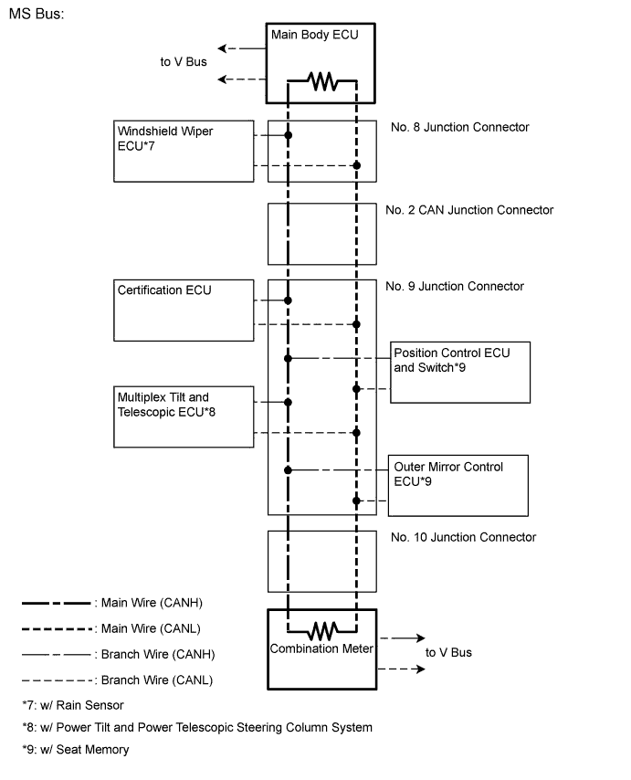

CAN COMMUNICATION SYSTEM (for RHD) > SYSTEM DIAGRAM |

| No. | ECU/Sensor Name |
| 1 | ECM |
| 2 | Network Gateway ECU |
| 3 | Main Body ECU (Cowl Side Junction Block LH) |
| 4 | DLC3 |
| 5 | Air Conditioning Amplifier |
| 6 | Center Airbag Sensor Assembly |
| 7 | Multi-display*1 |
| 8 | Combination Meter |
| 9 | Certification ECU (Smart Key ECU) |
| 10 | Multiplex Tilt and Telescopic ECU*2 |
| 11 | Outer Mirror Control ECU*3 |
| 12 | Windshield Wiper ECU*4 |
| 13 | Position Control ECU and Switch*3 |
| 14 | Master Cylinder Solenoid (Skid Control ECU) |
| 15 | Yaw Rate Sensor |
| 16 | Steering Control ECU*5 |
| 17 | Steering Angle Sensor |
| 18 | 4WD Control ECU |
| 19 |
|
| 20 | Seat Belt Control ECU*8 |
| 21 | Suspension Control ECU*9 |
| 22 | No. 1 CAN Junction Connector |


